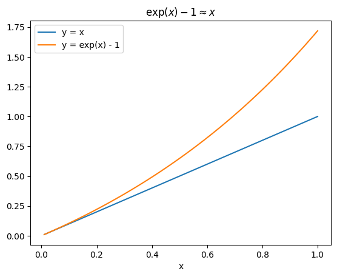

対数変換
Contents
対数変換#
目的変数や説明変数を対数変換すると、推定結果の解釈が変わる
モデル |
係数の解釈 |
|---|---|
\(Y = \beta_0 + \beta_1 X\) |
「\(X\)が1単位増加すると，\(Y\)が\(\beta_1\)単位増加する」 |
\(Y = \beta_0 + \beta_1 \ln(X)\) |
「\(X\)が1%増加すると，\(Y\)が\(\beta_1 / 100\)単位増加する」 |
\(\ln(Y) = \beta_0 + \beta_1 X\) |
「\(X\)が1単位増加すると，\(Y\)が\((\beta_1 \times 100)\)%増加する」 |
\(\ln(Y) = \beta_0 + \beta_1 \ln(X)\) |
「\(X\)が1%増加すると，\(Y\)が\(\beta_1\)%増加する」 |
次のようなデータを使って実際にモデルをあてはめつつ確認していく
import numpy as np
import pandas as pd
import matplotlib.pyplot as plt
import seaborn as sns
import statsmodels.api as sm
import statsmodels.formula.api as smf
# 真のデータ生成過程
n = 100
np.random.seed(0)
x = np.random.uniform(1, 100, size=n)
x = np.sort(x)
e = np.random.normal(loc=0, scale=15, size=n)
beta0 = 100
beta1 = 3
y = beta0 + beta1 * x + e
df = pd.DataFrame({"y": y, "x": x})
plt.scatter(x, y)
plt.xlabel("x")
plt.ylabel("y")
plt.title(f"y = {beta0} + {beta1} * x + e")
plt.show()
(1) \(Y = \beta_0 + \beta_1 X\)#
Xを1単位増加させたモデルとそうでないモデルで差分をとってみると
であるため、「\(X\)が1単位増加すると、\(Y\)が\(\beta_1\)単位増加する」という解釈になる
model = smf.ols('y ~ x', data=df).fit()
beta = model.params.to_list()
y_pred = model.predict(df[["x"]])
fig, ax = plt.subplots()
ax.scatter(x, y)
ax.set(xlabel="x", ylabel="y", title="y = β0 + β1 x")
ax.plot(x, y_pred, label=f"estimated model: y = {beta[0]:.1f} + {beta[1]:.2f} x")
ax.legend()
fig.show()
(2) \(Y = \beta_0 + \beta_1 \ln(X)\)#
\(\ln(1.01) \approx 0.01\)なので
「\(X\)が1%増加すると、\(Y\)が\(\beta_1 / 100\)単位増加する」となる
\(\ln(1.01) \approx 0.01\)について
\(\ln(1.01) \approx 0.01\)はテイラー近似から導出される。まずテイラー近似について述べる
\(f(x)=\ln(x+1)\)とおくと、その\(n\)次の微分は
となる。もし\(x=0\)なら
となる。
これを\(x=0\)でのテイラー展開（つまりマクローリン展開）
にあてはめると、
となる。これは\(x\)が極めて小さな値（\(x \approx 0\)）であれば\(x^2\)や\(x^3\)といった値は非常に小さくなるため、\(\ln(1+x) \approx x\)となる。
よって\(\ln( 1 + 0.01) \approx 0.01\)となる
数値計算的に確かめると、以下のようになる
log: 0.0099503
approx 1: 0.0100000
approx 2: 0.0099500
approx 3: 0.0099503
model = smf.ols('y ~ np.log(x)', data=df).fit()
beta = model.params.to_list()
y_pred = model.predict(df[["x"]])
fig, axes = plt.subplots(ncols=2, figsize=[12, 4])
axes[0].scatter(x, y)
axes[0].set(xlabel="x", ylabel="y", title="y = β0 + β1 log(x)")
axes[0].plot(x, y_pred, label=f"estimated model: y = {beta[0]:.1f} + {beta[1]:.3g} log(x)")
axes[0].legend()
axes[1].scatter(np.log(x), y)
axes[1].set(xlabel="log(x)", ylabel="y", title="y = β0 + β1 log(x)")
axes[1].plot(np.log(x), y_pred, label=f"estimated model: y = {beta[0]:.1f} + {beta[1]:.3g} log(x)")
axes[1].legend()
fig.show()
np.log(1.01)
0.009950330853168092
x0 = 50
y1 = beta[0] + beta[1] * np.log(x0)
y2 = beta[0] + beta[1] * np.log(x0 * 1.01)
print(f"xが1%増加したときのyの増分 = {y2 - y1:.3f}")
xが1%増加したときのyの増分 = 0.825
\(\ln(1.01) \approx 0.01\)の近似誤差が多少あるが、おおむね「\(X\)が1%増加すると、\(Y\)が\(\beta_1 / 100\)単位増加する」という関係になる。
(3) \(\ln(Y) = \beta_0 + \beta_1 X\)#
\(X\)を1単位増やしたときの\(Y\)の変化率は
\(\beta_1\)が十分に小さいとき、\(\exp(\beta_1) - 1 \approx \beta_1\)
そのため\(X\)が1単位増えると、\(Y\)は\(\exp(\beta_1) - 1 \approx \beta_1\)％増える
「\(X\)が1単位増加すると、\(Y\)が\((\beta_1 \times 100)\)%増加する」
Note
「十分に小さいとき」とは？
下図のように、\(x\)が大きくなるに連れて誤差は増える。

\(x\)が\(0.2\)であれば近似誤差は\(0.02\)程度となる。
\(x\)が\(0.4\)であれば近似誤差は\(0.1\)程度となる。
大まかな目安としては、推定量\(\beta\)が0.2を超えるくらいになると近似誤差に気をつけたほうがよさそう
Note
別の式変形のしかた
差し引きすれば
ここで\(\log_a(A) - \log_a(B) = \log_a(\frac{A}{B})\)より
両辺を指数関数に入れると
両辺から1を引けば
\(\exp(x) - 1 \approx x\)について
\(f(x)=\exp(x)\)とおくと、その\(n\)次の微分は
となる。もし\(x=0\)なら
となる。
これを\(x=0\)でのテイラー展開（つまりマクローリン展開）
にあてはめると、
となる。
\(x\)が極めて小さな値（\(x \approx 0\)）であれば\(x^2\)や\(x^3\)といった値は非常に小さくなるため、\(\exp(x) \approx 1 + x\)となる。
よって\(\exp(x) - 1 \approx x\)となる
数値計算的に確かめると、以下のようになる
x : 0.1
exp(x) - 1: 0.1051709
マクローリン近似
もとの値 exp(x) = 1.1051709
1次近似 1 + x = 1.1000000
2次近似 1 + x + (x^2 / 2!) = 1.1050000
model = smf.ols('np.log(y) ~ x', data=df).fit()
beta = model.params.to_list()
y_pred = model.predict(df[["x"]])
fig, axes = plt.subplots(ncols=2, figsize=[12, 4])
axes[0].scatter(x, y)
axes[0].set(xlabel="x", ylabel="y, exp(y_hat)", title="y = β0 + β1 x")
axes[0].plot(x, np.exp(y_pred), label=f"estimated model: log(y) = {beta[0]:.1f} + {beta[1]:.2g} x")
axes[0].legend()
axes[1].scatter(x, np.log(y))
axes[1].set(xlabel="x", ylabel="log(y), y_hat", title="log(y) = β0 + β1 x")
axes[1].plot(x, y_pred, label=f"estimated model: log(y) = {beta[0]:.1f} + {beta[1]:.2g} x")
axes[1].legend()
fig.show()
x0 = 50
y1 = beta[0] + beta[1] * x0
y2 = beta[0] + beta[1] * (x0 + 1)
print(f"xが1単位増加したときのyの増分 = {y2 - y1:.3f}")
xが1単位増加したときのyの増分 = 0.013
(4) \(\ln(Y) = \beta_0 + \beta_1 \ln(X)\)#
「\(X\)が1%増加すると、\(Y\)が\(\beta_1\)%増加する」
model = smf.ols('np.log(y) ~ np.log(x)', data=df).fit()
beta = model.params.to_list()
y_pred = model.predict(df[["x"]])
fig, axes = plt.subplots(ncols=2, figsize=[12, 4])
axes[0].scatter(x, y)
axes[0].set(xlabel="x", ylabel="y, exp(y_hat)", title="log(y) = β0 + β1 log(x)")
axes[0].plot(x, np.exp(y_pred), label=f"estimated model: log(y) = {beta[0]:.1f} + {beta[1]:.2g} log(x)")
axes[0].legend()
axes[1].scatter(np.log(x), np.log(y))
axes[1].set(xlabel="log(x)", ylabel="log(y), y_hat", title="log(y) = β0 + β1 log(x)")
axes[1].plot(np.log(x), y_pred, label=f"estimated model: log(y) = {beta[0]:.1f} + {beta[1]:.2g} log(x)")
axes[1].legend()
fig.show()

x0 = 50
y1 = beta[0] + beta[1] * np.log(x0)
y2 = beta[0] + beta[1] * np.log(x0 + 1)
print(f"xが1%増加したときのyの増分 = {y2 - y1:.3f}")
xが1%増加したときのyの増分 = 0.008
y1 = model.predict(pd.DataFrame([{"x": x0}])).to_numpy()[0]
y2 = model.predict(pd.DataFrame([{"x": x0 + 1}])).to_numpy()[0]
print(f"xが1単位増加したときのyの増分 = {y2 - y1:.3f}")
xが1単位増加したときのyの増分 = 0.008